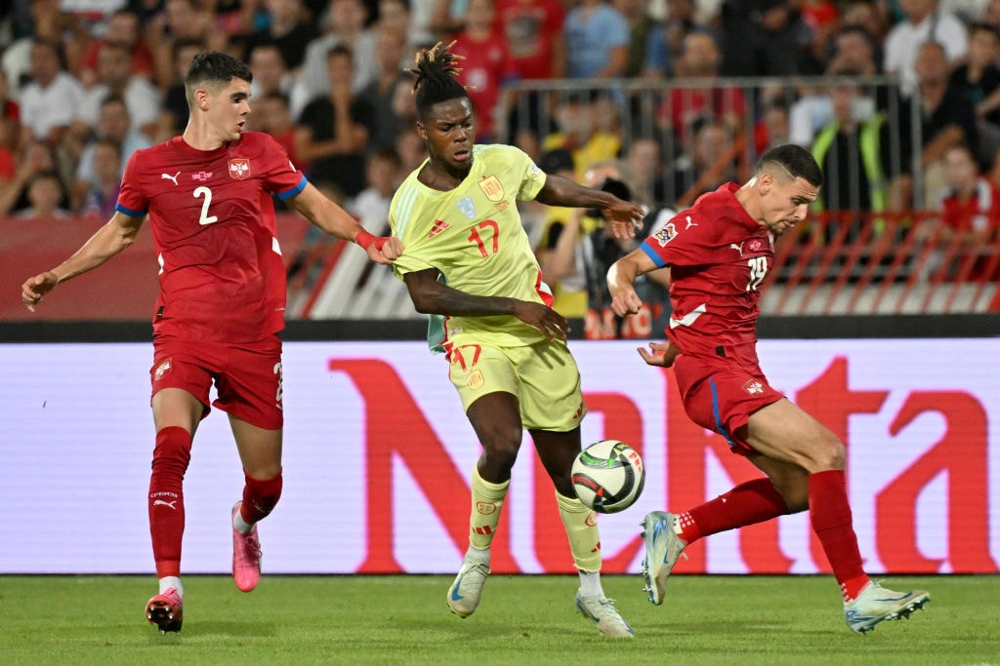
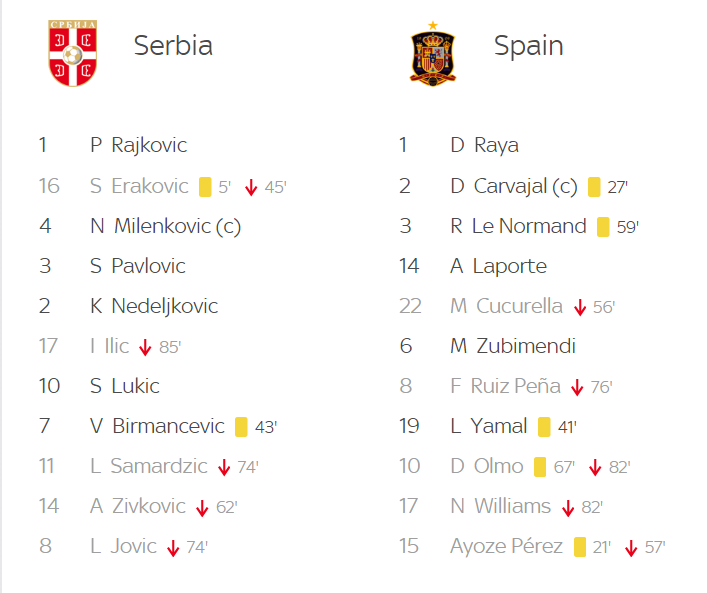

Prediction: Spain to win-to-nil
Spain have only conceded once in their last four Nations League outings. They are back in action in the UEFA Nations League, with odds favoring a home victory against Serbia in Cordoba.
Key Stats
- Spain have won 10 of their last 11 matches, including one victory in extra time.
- All of Serbia’s last six matches have had under 2.5 goals.
- Serbia have failed to score in four of their last six matches.
Source: UEFA.com
Correct Score Prediction: Spain 1-0 Serbia
Serbia operated defensively in the reverse fixture last month, which ended in a 0-0 draw. Similar tactics are expected, and while Spain are missing several key players, they should still have enough quality to secure a narrow win.
Pre-game Odds and Win Probability
Spain: 1/3 (1.33) – 75.0% win probability
Draw: 4/1 (5.00) – 20.0%
Serbia: 7/1 (8.00) – 12.5% chance of victory
Recent Head-to-Head
Spain vs Serbia ended in a goalless draw last month in Belgrade. Spain have won 1 of the last 2 meetings, with their last victory coming in 2012.
Source: IMAGO Images
Spain and Serbia Lineups
Here are the predicted lineups for both teams ahead of the match:
